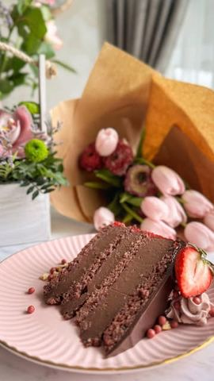

Moja beleška
SačuvanoSastojci
- Kore (x4)
- Čokoladni fil
- Malina fil
- Preliv
Priprema
Torticu sam pripremala u kalupu prečnika 26cm, bilo bi sjajno i ako imate dva ista kako bi skratili vreme pečenja 🥰 Za kore je potrebno belanca umutiti, dodati šećer, pa umutiti u čvrst šne, tome dodati mlevene lešnike i kakao, pa lagano spatulom sjediniti. Sipati u kalup koji ste zaštitili papirom za pečenje, pa peći zagrejanoj u rerni 20ak minuta na 180C. Postupak ponoviti 4 puta. Ja sam pekla po dve odjednom. Za fil sjediniti žumanca, šećer, kakao, gustin i nekih 200ml od litre mleka. Tu smesu sipati u već vrelo mleko (onih preostalih 800ml) i mešati sve vreme na srednjoj jačini kako ne bi zagorelo. Sklonite sa ringle pa dodajte 300 gr crne čokolade, umešajte, prekrijte providnom folijom i ostavite u frižideru na hladjenju. Kada se smesa prohladi umutite puter i dodajte fil iz delova, muteći. Na kraju se skuvaju maline - nekih 10ak min, pa se skloni sa ringle, doda gustin i umeša. Redja se kora - malina fil - čokoladni fil x 3, a preko poslednje, četvrte kore premažite ganaš. Za njega je potrebno da oslonite čokolade i prelijete slatkom pavlakom koju ste ugrejali do vrenja. Sačekate minut i umešajte. Ja sam premazivala vreo malina sos. Zato se na preseku ne vidi previše, ali je tako dobro natopio kore, i daje sjajan osvežavajući ukus, pa bih opet isto ponovila. Ostavite je preko noći u kalupu.
Originalni opis sa Instagrama
Lekina rodjendanska 🎂 - Baron torta Torticu sam pripremala u kalupu prečnika 26cm, bilo bi sjajno i ako imate dva ista kako bi skratili vreme pečenja 🥰 Kore (x4): •4 belanca •70 gr šećera •1 ravna kašika brašna •1 kašika kakaa •50 gr mlevenih pečenih lešnika (badema) •5 gr praška za pecivo Čokoladni fil: •1 l mleka •16 žumanaca •200 gr šećera •100 gr gustina •30 gr kakaa •300 gr crne čokolade •125 gr putera Malina fil: •600 gr malina •100 gr šećera •150 ml vode •50 gr gustina (rastopiti u 50 ml hladne vode) Preliv: •75gr crne čokolade •75 gr mlečne čokolade •75 ml slatke pavlake Za kore je potrebno belanca umutiti, dodati šećer, pa umutiti u čvrst šne, tome dodati mlevene lešnike i kakao, pa lagano spatulom sjediniti. Sipati u kalup koji ste zaštitili papirom za pečenje, pa peći zagrejanoj u rerni 20ak minuta na 180C. Postupak ponoviti 4 puta. Ja sam pekla po dve odjednom. Za fil sjediniti žumanca, šećer, kakao, gustin i nekih 200ml od litre mleka. Tu smesu sipati u već vrelo mleko (onih preostalih 800ml) i mešati sve vreme na srednjoj jačini kako ne bi zagorelo. Sklonite sa ringle pa dodajte 300 gr crne čokolade, umešajte, prekrijte providnom folijom i ostavite u frižideru na hladjenju. Kada se smesa prohladi umutite puter i dodajte fil iz delova, muteći. Na kraju se skuvaju maline - nekih 10ak min, pa se skloni sa ringle, doda gustin i umeša. Redja se kora - malina fil - čokoladni fil x 3, a preko poslednje, četvrte kore premažite ganaš. Za njega je potrebno da oslonite čokolade i prelijete slatkom pavlakom koju ste ugrejali do vrenja. Sačekate minut i umešajte. Ja sam premazivala vreo malina sos. Zato se na preseku ne vidi previše, ali je tako dobro natopio kore, i daje sjajan osvežavajući ukus, pa bih opet isto ponovila. Ostavite je preko noći u kalupu. Ukrasite po želji i uživajte, torta je jako sočna i izdašna, a recept sam dobila od jedne od vas, kaže kako je oduševila ukusom, evo i mi potvrđujemo 🥰🥰🥰 Uživajte 🌸 • • • #torta #domacatorta #baron #barontorta #cokoladnatorta #ukusnetorte #slatkirecepti